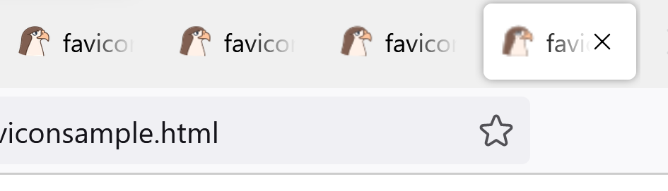

Topic: Favicons & Fonts
A favicon is an icon seen in a tab, a key component of an organization's visual cues and visual identity. A favicon is also known as a web site icon, tab icon, url icon, bookmark icon.
Favicons can be of type PNG, GIF, JPEG, SVG, and APNG.
Add a favicon to a web page, with the link tag - linking the icon by
setting the href property.
<head>
<title>My Page Title</title<
<link rel="icon" type="image/x-icon"
href="/images/favicon.ico"<
</head<
Fonts and icons add professionalism to web pages. Many libraries exist, with free tiers and paid-for tiers.
Font Awesome is a library of icons and fonts, created for Bootstrap.
Either download source code, or use a CDN. Choose an icon or font, and follow instructions for using this in your code. Typically, you are given code to copy and paste.